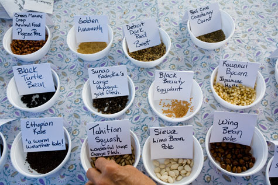

If you’re getting eager to start your garden, you’re probably already stockpiling seed catalogs and making wish lists. But before you order a long list of seeds from the catalogs, you might want to try acquiring seeds through fun and easy seed swaps. You can save a little money this way, and it’s a great excuse to get together with other local gardeners. Plus you’ll be joining the efforts of gardeners worldwide to preserve plant diversity and keep many heirloom garden plants around for generations to come.
The traditional model of a seed swap is an informal local get-together, usually in early spring, where gardening neighbors all bring extra seeds saved from previous seasons - along with any surplus seedlings they won’t be able to use that year - and trade these valuable goods among themselves. Who had the juiciest tomatoes last year? You’ll want a few seeds from those plants. You started too many broccoli seedlings in your backyard greenhouse? Why not spread the love around?
The most valuable aspect of attending a seed swap may actually be the chance to glean local wisdom about what works - or doesn’t work - in your shared gardening microclimate. To find a seed swap near you, check with local gardening clubs and food co-ops. If you decide to organize a local seed swap this year (check out this guide on how to do that), think about inviting an expert who can talk to your community about how important the efforts of gardeners are in preserving our global biodiversity.
Christine Sheppard, an organic farmer in Hawai'i, says she has learned a great deal about her microclimate through local seed swaps. "It put us in touch with a whole fund of knowledge about what plants grow well in our varied microclimates here in Hawai'i, most of which are not like anything on the mainland. Which tomatoes stood up to fruit fly, which root vegetables would grow in our very gritty broken lava soil, what to do with the local traditional staple of taro apart from making poi, which greens grow in our humid hot climate. It was "eat local" at its best, and a whole lot of fun too!"
You may also want to join an online seed exchange. For just $35, you can become a member of Seed Savers Exchange and immediately have access to thousands of rare vegetable, fruit and grain seeds. They also have a special group (also a $35 fee) for people who are interested in exchanging flower and herb heirlooms.
Still have more seeds than you can possibly use? Consider making a donation of seeds to the America the Beautiful Fund. Their Operation Green Plant donates seeds to worthy projects, such as school and community gardens.
Want to organize a seed swap in your community? We can help - for free! Learn more here.
|
 CRAIG ELEVITCH At local seed exchanges, you may get lucky and find rare seeds that are not available through national seed companies. And they're likely to be better adapted to your gardening region. |
CRAIG ELEVITCH Gardeners on the Big Island of Hawai'i share free seedlings of the state tree (kukui nut, or candlenut) at an annual community seed and plant exchange.
|
With your annual membership to Seed Savers Exchange, you’ll get the Seed Savers Yearbook, an invaluable resource that contains more than 11,000 heirloom garden seed offerings. |